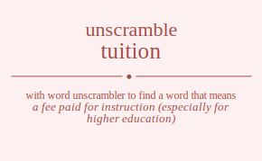

The word found after unscrambling tuition means that a fee paid for instruction (especially for higher education), teaching pupils individually (usually by a tutor hired privately), .

The word found after unscrambling tuition means that a fee paid for instruction (especially for higher education), teaching pupils individually (usually by a tutor hired privately), .
You can also find solutions for different combinations of letters in tuition like tuition tuitino tuitoin tuitoni tuitnio tuitnoi tuiiton tuiitno tuiiotn tuiiont tuiinto tuiinot tuiotin tuiotni tuioitn tuioint tuionti tuionit tuintio tuintoi tuinito tuiniot tuinoti tuinoit tutiion tutiino tutioin tutioni tutinio tutinoi tutiion tutiino tutioin tutioni tutinio tutinoi tutoiin tutoini tutoiin tutoini tutonii tutonii tutniio tutnioi tutniio tutnioi tutnoii tutnoii tuiiton tuiitno tuiiotn tuiiont tuiinto tuiinot tuition tuitino tuitoin tuitoni tuitnio tuitnoi tuioitn tuioint tuiotin tuiotni tuionit tuionti tuinito tuiniot tuintio tuintoi tuinoit tuinoti tuoitin tuoitni tuoiitn tuoiint tuointi tuoinit tuotiin tuotini tuotiin tuotini tuotnii tuotnii tuoiitn tuoiint tuoitin tuoitni tuoinit tuointi tuoniti tuoniit tuontii tuontii tuoniit tuoniti tunitio tunitoi tuniito tuniiot tunioti tunioit tuntiio tuntioi tuntiio tuntioi tuntoii tuntoii tuniito tuniiot tunitio tunitoi tunioit tunioti tunoiti tunoiit tunotii tunotii tunoiit tunoiti tiution tiutino tiutoin tiutoni tiutnio tiutnoi tiuiton tiuitno tiuiotn tiuiont tiuinto tiuinot tiuotin tiuotni tiuoitn tiuoint tiuonti tiuonit tiuntio tiuntoi tiunito tiuniot tiunoti tiunoit tituion tituino tituoin tituoni titunio titunoi titiuon titiuno titioun titionu titinuo titinou titouin titouni titoiun titoinu titonui titoniu titnuio titnuoi titniuo titniou titnoui titnoiu tiiuton tiiutno tiiuotn tiiuont tiiunto tiiunot tiituon tiituno tiitoun tiitonu tiitnuo tiitnou tiioutn tiiount tiiotun tiiotnu tiionut tiiontu tiinuto tiinuot tiintuo tiintou tiinout tiinotu tioutin tioutni tiouitn tiouint tiounti tiounit tiotuin tiotuni tiotiun tiotinu tiotnui tiotniu tioiutn tioiunt tioitun tioitnu tioinut tiointu tionuti tionuit tiontui tiontiu tioniut tionitu tinutio tinutoi tinuito tinuiot tinuoti tinuoit tintuio tintuoi tintiuo tintiou tintoui tintoiu tiniuto tiniuot tinituo tinitou tiniout tiniotu tinouti tinouit tinotui tinotiu tinoiut tinoitu ttuiion ttuiino ttuioin ttuioni ttuinio ttuinoi ttuiion ttuiino ttuioin ttuioni ttuinio ttuinoi ttuoiin ttuoini ttuoiin ttuoini ttuonii ttuonii ttuniio ttunioi ttuniio ttunioi ttunoii ttunoii ttiuion ttiuino ttiuoin ttiuoni ttiunio ttiunoi ttiiuon ttiiuno ttiioun ttiionu ttiinuo ttiinou ttiouin ttiouni ttioiun ttioinu ttionui ttioniu ttinuio ttinuoi ttiniuo ttiniou ttinoui ttinoiu ttiuion ttiuino ttiuoin ttiuoni ttiunio ttiunoi ttiiuon ttiiuno ttiioun ttiionu ttiinuo ttiinou ttiouin ttiouni ttioiun ttioinu ttionui ttioniu ttinuio ttinuoi ttiniuo ttiniou ttinoui ttinoiu ttouiin ttouini ttouiin ttouini ttounii ttounii ttoiuin ttoiuni ttoiiun ttoiinu ttoinui ttoiniu ttoiuin ttoiuni ttoiiun ttoiinu ttoinui ttoiniu ttonuii ttonuii ttoniui ttoniiu ttoniui ttoniiu ttnuiio ttnuioi ttnuiio ttnuioi ttnuoii ttnuoii ttniuio ttniuoi ttniiuo ttniiou ttnioui ttnioiu ttniuio ttniuoi ttniiuo ttniiou ttnioui ttnioiu ttnouii ttnouii ttnoiui ttnoiiu ttnoiui ttnoiiu tiuiton tiuitno tiuiotn tiuiont tiuinto tiuinot tiution tiutino tiutoin tiutoni tiutnio tiutnoi tiuoitn tiuoint tiuotin tiuotni tiuonit tiuonti tiunito tiuniot tiuntio tiuntoi tiunoit tiunoti tiiuton tiiutno tiiuotn tiiuont tiiunto tiiunot tiituon tiituno tiitoun tiitonu tiitnuo tiitnou tiioutn tiiount tiiotun tiiotnu tiionut tiiontu tiinuto tiinuot tiintuo tiintou tiinout tiinotu tituion tituino tituoin tituoni titunio titunoi titiuon titiuno titioun titionu titinuo titinou titouin titouni titoiun titoinu titonui titoniu titnuio titnuoi titniuo titniou titnoui titnoiu tiouitn tiouint tioutin tioutni tiounit tiounti tioiutn tioiunt tioitun tioitnu tioinut tiointu tiotuin tiotuni tiotiun tiotinu tiotnui tiotniu tionuit tionuti tioniut tionitu tiontui tiontiu tinuito tinuiot tinutio tinutoi tinuoit tinuoti tiniuto tiniuot tinituo tinitou tiniout tiniotu tintuio tintuoi tintiuo tintiou tintoui tintoiu tinouit tinouti tinoiut tinoitu tinotui tinotiu touitin touitni touiitn touiint touinti touinit toutiin toutini toutiin toutini toutnii toutnii touiitn touiint touitin touitni touinit touinti touniti touniit tountii tountii touniit touniti toiutin toiutni toiuitn toiuint toiunti toiunit toituin toituni toitiun toitinu toitnui toitniu toiiutn toiiunt toiitun toiitnu toiinut toiintu toinuti toinuit tointui tointiu toiniut toinitu totuiin totuini totuiin totuini totunii totunii totiuin totiuni totiiun totiinu totinui totiniu totiuin totiuni totiiun totiinu totinui totiniu totnuii totnuii totniui totniiu totniui totniiu toiuitn toiuint toiutin toiutni toiunit toiunti toiiutn toiiunt toiitun toiitnu toiinut toiintu toituin toituni toitiun toitinu toitnui toitniu toinuit toinuti toiniut toinitu tointui tointiu tonuiti tonuiit tonutii tonutii tonuiit tonuiti toniuti toniuit tonitui tonitiu toniiut toniitu tontuii tontuii tontiui tontiiu tontiui tontiiu toniuit toniuti toniiut toniitu tonitui tonitiu tnuitio tnuitoi tnuiito tnuiiot tnuioti tnuioit tnutiio tnutioi tnutiio tnutioi tnutoii tnutoii tnuiito tnuiiot tnuitio tnuitoi tnuioit tnuioti tnuoiti tnuoiit tnuotii tnuotii tnuoiit tnuoiti tniutio tniutoi tniuito tniuiot tniuoti tniuoit tnituio tnituoi tnitiuo tnitiou tnitoui tnitoiu tniiuto tniiuot tniituo tniitou tniiout tniiotu tniouti tniouit tniotui tniotiu tnioiut tnioitu tntuiio tntuioi tntuiio tntuioi tntuoii tntuoii tntiuio tntiuoi tntiiuo tntiiou tntioui tntioiu tntiuio tntiuoi tntiiuo tntiiou tntioui tntioiu tntouii tntouii tntoiui tntoiiu tntoiui tntoiiu tniuito tniuiot tniutio tniutoi tniuoit tniuoti tniiuto tniiuot tniituo tniitou tniiout tniiotu tnituio tnituoi tnitiuo tnitiou tnitoui tnitoiu tniouit tniouti tnioiut tnioitu tniotui tniotiu tnouiti tnouiit tnoutii tnoutii tnouiit tnouiti tnoiuti tnoiuit tnoitui tnoitiu tnoiiut tnoiitu tnotuii tnotuii tnotiui tnotiiu tnotiui tnotiiu tnoiuit tnoiuti tnoiiut tnoiitu tnoitui tnoitiu utition utitino utitoin utitoni utitnio utitnoi utiiton utiitno utiiotn utiiont utiinto utiinot utiotin utiotni utioitn utioint utionti utionit utintio utintoi utinito utiniot utinoti utinoit uttiion uttiino uttioin uttioni uttinio uttinoi uttiion uttiino uttioin uttioni uttinio uttinoi uttoiin uttoini uttoiin uttoini uttonii uttonii uttniio uttnioi uttniio uttnioi uttnoii uttnoii utiiton utiitno utiiotn utiiont utiinto utiinot utition utitino utitoin utitoni utitnio utitnoi utioitn utioint utiotin utiotni utionit utionti utinito utiniot utintio utintoi utinoit utinoti utoitin utoitni utoiitn utoiint utointi utoinit utotiin utotini utotiin utotini utotnii utotnii utoiitn utoiint utoitin utoitni utoinit utointi utoniti utoniit utontii utontii utoniit utoniti utnitio utnitoi utniito utniiot utnioti utnioit utntiio utntioi utntiio utntioi utntoii utntoii utniito utniiot utnitio utnitoi utnioit utnioti utnoiti utnoiit utnotii utnotii utnoiit utnoiti uittion uittino uittoin uittoni uittnio uittnoi uititon uititno uitiotn uitiont uitinto uitinot uitotin uitotni uitoitn uitoint uitonti uitonit uitntio uitntoi uitnito uitniot uitnoti uitnoit uittion uittino uittoin uittoni uittnio uittnoi uititon uititno uitiotn uitiont uitinto uitinot uitotin uitotni uitoitn uitoint uitonti uitonit uitntio uitntoi uitnito uitniot uitnoti uitnoit uiitton uiittno uiitotn uiitont uiitnto uiitnot uiitton uiittno uiitotn uiitont uiitnto uiitnot uiiottn uiiotnt uiiottn uiiotnt uiiontt uiiontt uiintto uiintot uiintto uiintot uiinott uiinott uiottin uiottni uiotitn uiotint uiotnti uiotnit uiottin uiottni uiotitn uiotint uiotnti uiotnit uioittn uioitnt uioittn uioitnt uiointt uiointt uiontti uiontit uiontti uiontit uionitt uionitt uinttio uinttoi uintito uintiot uintoti uintoit uinttio uinttoi uintito uintiot uintoti uintoit uinitto uinitot uinitto uinitot uiniott uiniott uinotti uinotit uinotti uinotit uinoitt uinoitt uttiion uttiino uttioin uttioni uttinio uttinoi uttiion uttiino uttioin uttioni uttinio uttinoi uttoiin uttoini uttoiin uttoini uttonii uttonii uttniio uttnioi uttniio uttnioi uttnoii uttnoii utition utitino utitoin utitoni utitnio utitnoi utiiton utiitno utiiotn utiiont utiinto utiinot utiotin utiotni utioitn utioint utionti utionit utintio utintoi utinito utiniot utinoti utinoit utition utitino utitoin utitoni utitnio utitnoi utiiton utiitno utiiotn utiiont utiinto utiinot utiotin utiotni utioitn utioint utionti utionit utintio utintoi utinito utiniot utinoti utinoit utotiin utotini utotiin utotini utotnii utotnii utoitin utoitni utoiitn utoiint utointi utoinit utoitin utoitni utoiitn utoiint utointi utoinit utontii utontii utoniti utoniit utoniti utoniit utntiio utntioi utntiio utntioi utntoii utntoii utnitio utnitoi utniito utniiot utnioti utnioit utnitio utnitoi utniito utniiot utnioti utnioit utnotii utnotii utnoiti utnoiit utnoiti utnoiit uititon uititno uitiotn uitiont uitinto uitinot uittion uittino uittoin uittoni uittnio uittnoi uitoitn uitoint uitotin uitotni uitonit uitonti uitnito uitniot uitntio uitntoi uitnoit uitnoti uiitton uiittno uiitotn uiitont uiitnto uiitnot uiitton uiittno uiitotn uiitont uiitnto uiitnot uiiottn uiiotnt uiiottn uiiotnt uiiontt uiiontt uiintto uiintot uiintto uiintot uiinott uiinott uittion uittino uittoin uittoni uittnio uittnoi uititon uititno uitiotn uitiont uitinto uitinot uitotin uitotni uitoitn uitoint uitonti uitonit uitntio uitntoi uitnito uitniot uitnoti uitnoit uiotitn uiotint uiottin uiottni uiotnit uiotnti uioittn uioitnt uioittn uioitnt uiointt uiointt uiottin uiottni uiotitn uiotint uiotnti uiotnit uiontit uiontti uionitt uionitt uiontti uiontit uintito uintiot uinttio uinttoi uintoit uintoti uinitto uinitot uinitto uinitot uiniott uiniott uinttio uinttoi uintito uintiot uintoti uintoit uinotit uinotti uinoitt uinoitt uinotti uinotit uotitin uotitni uotiitn uotiint uotinti uotinit uottiin uottini uottiin uottini uottnii uottnii uotiitn uotiint uotitin uotitni uotinit uotinti uotniti uotniit uotntii uotntii uotniit uotniti uoittin uoittni uoititn uoitint uoitnti uoitnit uoittin uoittni uoititn uoitint uoitnti uoitnit uoiittn uoiitnt uoiittn uoiitnt uoiintt uoiintt uointti uointit uointti uointit uoinitt uoinitt uottiin uottini uottiin uottini uottnii uottnii uotitin uotitni uotiitn uotiint uotinti uotinit uotitin uotitni uotiitn uotiint uotinti uotinit uotntii uotntii uotniti uotniit uotniti uotniit uoititn uoitint uoittin uoittni uoitnit uoitnti uoiittn uoiitnt uoiittn uoiitnt uoiintt uoiintt uoittin uoittni uoititn uoitint uoitnti uoitnit uointit uointti uoinitt uoinitt uointti uointit uontiti uontiit uonttii uonttii uontiit uontiti uonitti uonitit uonitti uonitit uoniitt uoniitt uonttii uonttii uontiti uontiit uontiti uontiit uonitit uonitti uoniitt uoniitt uonitti uonitit untitio untitoi untiito untiiot untioti untioit unttiio unttioi unttiio unttioi unttoii unttoii untiito untiiot untitio untitoi untioit untioti untoiti untoiit untotii untotii untoiit untoiti unittio unittoi unitito unitiot unitoti unitoit unittio unittoi unitito unitiot unitoti unitoit uniitto uniitot uniitto uniitot uniiott uniiott uniotti uniotit uniotti uniotit unioitt unioitt unttiio unttioi unttiio unttioi unttoii unttoii untitio untitoi untiito untiiot untioti untioit untitio untitoi untiito untiiot untioti untioit untotii untotii untoiti untoiit untoiti untoiit unitito unitiot unittio unittoi unitoit unitoti uniitto uniitot uniitto uniitot uniiott uniiott unittio unittoi unitito unitiot unitoti unitoit uniotit uniotti unioitt unioitt uniotti uniotit unotiti unotiit unottii unottii unotiit unotiti unoitti unoitit unoitti unoitit unoiitt unoiitt unottii unottii unotiti unotiit unotiti unotiit unoitit unoitti unoiitt unoiitt unoitti unoitit itution itutino itutoin itutoni itutnio itutnoi ituiton ituitno ituiotn ituiont ituinto ituinot ituotin ituotni ituoitn ituoint ituonti ituonit ituntio ituntoi itunito ituniot itunoti itunoit ittuion ittuino ittuoin ittuoni ittunio ittunoi ittiuon ittiuno ittioun ittionu ittinuo ittinou ittouin ittouni ittoiun ittoinu ittonui ittoniu ittnuio ittnuoi ittniuo ittniou ittnoui ittnoiu itiuton itiutno itiuotn itiuont itiunto itiunot itituon itituno ititoun ititonu ititnuo ititnou itioutn itiount itiotun itiotnu itionut itiontu itinuto itinuot itintuo itintou itinout itinotu itoutin itoutni itouitn itouint itounti itounit itotuin itotuni itotiun itotinu itotnui itotniu itoiutn itoiunt itoitun itoitnu itoinut itointu itonuti itonuit itontui itontiu itoniut itonitu itnutio itnutoi itnuito itnuiot itnuoti itnuoit itntuio itntuoi itntiuo itntiou itntoui itntoiu itniuto itniuot itnituo itnitou itniout itniotu itnouti itnouit itnotui itnotiu itnoiut itnoitu iuttion iuttino iuttoin iuttoni iuttnio iuttnoi iutiton iutitno iutiotn iutiont iutinto iutinot iutotin iutotni iutoitn iutoint iutonti iutonit iutntio iutntoi iutnito iutniot iutnoti iutnoit iuttion iuttino iuttoin iuttoni iuttnio iuttnoi iutiton iutitno iutiotn iutiont iutinto iutinot iutotin iutotni iutoitn iutoint iutonti iutonit iutntio iutntoi iutnito iutniot iutnoti iutnoit iuitton iuittno iuitotn iuitont iuitnto iuitnot iuitton iuittno iuitotn iuitont iuitnto iuitnot iuiottn iuiotnt iuiottn iuiotnt iuiontt iuiontt iuintto iuintot iuintto iuintot iuinott iuinott iuottin iuottni iuotitn iuotint iuotnti iuotnit iuottin iuottni iuotitn iuotint iuotnti iuotnit iuoittn iuoitnt iuoittn iuoitnt iuointt iuointt iuontti iuontit iuontti iuontit iuonitt iuonitt iunttio iunttoi iuntito iuntiot iuntoti iuntoit iunttio iunttoi iuntito iuntiot iuntoti iuntoit iunitto iunitot iunitto iunitot iuniott iuniott iunotti iunotit iunotti iunotit iunoitt iunoitt ittuion ittuino ittuoin ittuoni ittunio ittunoi ittiuon ittiuno ittioun ittionu ittinuo ittinou ittouin ittouni ittoiun ittoinu ittonui ittoniu ittnuio ittnuoi ittniuo ittniou ittnoui ittnoiu itution itutino itutoin itutoni itutnio itutnoi ituiton ituitno ituiotn ituiont ituinto ituinot ituotin ituotni ituoitn ituoint ituonti ituonit ituntio ituntoi itunito ituniot itunoti itunoit itituon itituno ititoun ititonu ititnuo ititnou itiuton itiutno itiuotn itiuont itiunto itiunot itiotun itiotnu itioutn itiount itiontu itionut itintuo itintou itinuto itinuot itinotu itinout itotuin itotuni itotiun itotinu itotnui itotniu itoutin itoutni itouitn itouint itounti itounit itoitun itoitnu itoiutn itoiunt itointu itoinut itontui itontiu itonuti itonuit itonitu itoniut itntuio itntuoi itntiuo itntiou itntoui itntoiu itnutio itnutoi itnuito itnuiot itnuoti itnuoit itnituo itnitou itniuto itniuot itniotu itniout itnotui itnotiu itnouti itnouit itnoitu itnoiut iituton iitutno iituotn iituont iitunto iitunot iittuon iittuno iittoun iittonu iittnuo iittnou iitoutn iitount iitotun iitotnu iitonut iitontu iitnuto iitnuot iitntuo iitntou iitnout iitnotu iiutton iiuttno iiutotn iiutont iiutnto iiutnot iiutton iiuttno iiutotn iiutont iiutnto iiutnot iiuottn iiuotnt iiuottn iiuotnt iiuontt iiuontt iiuntto iiuntot iiuntto iiuntot iiunott iiunott iittuon iittuno iittoun iittonu iittnuo iittnou iituton iitutno iituotn iituont iitunto iitunot iitotun iitotnu iitoutn iitount iitontu iitonut iitntuo iitntou iitnuto iitnuot iitnotu iitnout iiotutn iiotunt iiottun iiottnu iiotnut iiotntu iiouttn iioutnt iiouttn iioutnt iiountt iiountt iiottun iiottnu iiotutn iiotunt iiotntu iiotnut iiontut iionttu iionutt iionutt iionttu iiontut iintuto iintuot iinttuo iinttou iintout iintotu iinutto iinutot iinutto iinutot iinuott iinuott iinttuo iinttou iintuto iintuot iintotu iintout iinotut iinottu iinoutt iinoutt iinottu iinotut iotutin iotutni iotuitn iotuint iotunti iotunit iottuin iottuni iottiun iottinu iottnui iottniu iotiutn iotiunt iotitun iotitnu iotinut iotintu iotnuti iotnuit iotntui iotntiu iotniut iotnitu iouttin iouttni ioutitn ioutint ioutnti ioutnit iouttin iouttni ioutitn ioutint ioutnti ioutnit iouittn iouitnt iouittn iouitnt iouintt iouintt iountti iountit iountti iountit iounitt iounitt iottuin iottuni iottiun iottinu iottnui iottniu iotutin iotutni iotuitn iotuint iotunti iotunit iotitun iotitnu iotiutn iotiunt iotintu iotinut iotntui iotntiu iotnuti iotnuit iotnitu iotniut ioitutn ioitunt ioittun ioittnu ioitnut ioitntu ioiuttn ioiutnt ioiuttn ioiutnt ioiuntt ioiuntt ioittun ioittnu ioitutn ioitunt ioitntu ioitnut iointut iointtu ioinutt ioinutt iointtu iointut iontuti iontuit ionttui ionttiu iontiut iontitu ionutti ionutit ionutti ionutit ionuitt ionuitt ionttui ionttiu iontuti iontuit iontitu iontiut ionitut ionittu ioniutt ioniutt ionittu ionitut intutio intutoi intuito intuiot intuoti intuoit inttuio inttuoi inttiuo inttiou inttoui inttoiu intiuto intiuot intituo intitou intiout intiotu intouti intouit intotui intotiu intoiut intoitu inuttio inuttoi inutito inutiot inutoti inutoit inuttio inuttoi inutito inutiot inutoti inutoit inuitto inuitot inuitto inuitot inuiott inuiott inuotti inuotit inuotti inuotit inuoitt inuoitt inttuio inttuoi inttiuo inttiou inttoui inttoiu intutio intutoi intuito intuiot intuoti intuoit intituo intitou intiuto intiuot intiotu intiout intotui intotiu intouti intouit intoitu intoiut inituto inituot inittuo inittou initout initotu iniutto iniutot iniutto iniutot iniuott iniuott inittuo inittou inituto inituot initotu initout iniotut iniottu inioutt inioutt iniottu iniotut inotuti inotuit inottui inottiu inotiut inotitu inoutti inoutit inoutti inoutit inouitt inouitt inottui inottiu inotuti inotuit inotitu inotiut inoitut inoittu inoiutt inoiutt inoittu inoitut ttuiion ttuiino ttuioin ttuioni ttuinio ttuinoi ttuiion ttuiino ttuioin ttuioni ttuinio ttuinoi ttuoiin ttuoini ttuoiin ttuoini ttuonii ttuonii ttuniio ttunioi ttuniio ttunioi ttunoii ttunoii ttiuion ttiuino ttiuoin ttiuoni ttiunio ttiunoi ttiiuon ttiiuno ttiioun ttiionu ttiinuo ttiinou ttiouin ttiouni ttioiun ttioinu ttionui ttioniu ttinuio ttinuoi ttiniuo ttiniou ttinoui ttinoiu ttiuion ttiuino ttiuoin ttiuoni ttiunio ttiunoi ttiiuon ttiiuno ttiioun ttiionu ttiinuo ttiinou ttiouin ttiouni ttioiun ttioinu ttionui ttioniu ttinuio ttinuoi ttiniuo ttiniou ttinoui ttinoiu ttouiin ttouini ttouiin ttouini ttounii ttounii ttoiuin ttoiuni ttoiiun ttoiinu ttoinui ttoiniu ttoiuin ttoiuni ttoiiun ttoiinu ttoinui ttoiniu ttonuii ttonuii ttoniui ttoniiu ttoniui ttoniiu ttnuiio ttnuioi ttnuiio ttnuioi ttnuoii ttnuoii ttniuio ttniuoi ttniiuo ttniiou ttnioui ttnioiu ttniuio ttniuoi ttniiuo ttniiou ttnioui ttnioiu ttnouii ttnouii ttnoiui ttnoiiu ttnoiui ttnoiiu tutiion tutiino tutioin tutioni tutinio tutinoi tutiion tutiino tutioin tutioni tutinio tutinoi tutoiin tutoini tutoiin tutoini tutonii tutonii tutniio tutnioi tutniio tutnioi tutnoii tutnoii tuition tuitino tuitoin tuitoni tuitnio tuitnoi tuiiton tuiitno tuiiotn tuiiont tuiinto tuiinot tuiotin tuiotni tuioitn tuioint tuionti tuionit tuintio tuintoi tuinito tuiniot tuinoti tuinoit tuition tuitino tuitoin tuitoni tuitnio tuitnoi tuiiton tuiitno tuiiotn tuiiont tuiinto tuiinot tuiotin tuiotni tuioitn tuioint tuionti tuionit tuintio tuintoi tuinito tuiniot tuinoti tuinoit tuotiin tuotini tuotiin tuotini tuotnii tuotnii tuoitin tuoitni tuoiitn tuoiint tuointi tuoinit tuoitin tuoitni tuoiitn tuoiint tuointi tuoinit tuontii tuontii tuoniti tuoniit tuoniti tuoniit tuntiio tuntioi tuntiio tuntioi tuntoii tuntoii tunitio tunitoi tuniito tuniiot tunioti tunioit tunitio tunitoi tuniito tuniiot tunioti tunioit tunotii tunotii tunoiti tunoiit tunoiti tunoiit tituion tituino tituoin tituoni titunio titunoi titiuon titiuno titioun titionu titinuo titinou titouin titouni titoiun titoinu titonui titoniu titnuio titnuoi titniuo titniou titnoui titnoiu tiution tiutino tiutoin tiutoni tiutnio tiutnoi tiuiton tiuitno tiuiotn tiuiont tiuinto tiuinot tiuotin tiuotni tiuoitn tiuoint tiuonti tiuonit tiuntio tiuntoi tiunito tiuniot tiunoti tiunoit tiituon tiituno tiitoun tiitonu tiitnuo tiitnou tiiuton tiiutno tiiuotn tiiuont tiiunto tiiunot tiiotun tiiotnu tiioutn tiiount tiiontu tiionut tiintuo tiintou tiinuto tiinuot tiinotu tiinout tiotuin tiotuni tiotiun tiotinu tiotnui tiotniu tioutin tioutni tiouitn tiouint tiounti tiounit tioitun tioitnu tioiutn tioiunt tiointu tioinut tiontui tiontiu tionuti tionuit tionitu tioniut tintuio tintuoi tintiuo tintiou tintoui tintoiu tinutio tinutoi tinuito tinuiot tinuoti tinuoit tinituo tinitou tiniuto tiniuot tiniotu tiniout tinotui tinotiu tinouti tinouit tinoitu tinoiut tituion tituino tituoin tituoni titunio titunoi titiuon titiuno titioun titionu titinuo titinou titouin titouni titoiun titoinu titonui titoniu titnuio titnuoi titniuo titniou titnoui titnoiu tiution tiutino tiutoin tiutoni tiutnio tiutnoi tiuiton tiuitno tiuiotn tiuiont tiuinto tiuinot tiuotin tiuotni tiuoitn tiuoint tiuonti tiuonit tiuntio tiuntoi tiunito tiuniot tiunoti tiunoit tiituon tiituno tiitoun tiitonu tiitnuo tiitnou tiiuton tiiutno tiiuotn tiiuont tiiunto tiiunot tiiotun tiiotnu tiioutn tiiount tiiontu tiionut tiintuo tiintou tiinuto tiinuot tiinotu tiinout tiotuin tiotuni tiotiun tiotinu tiotnui tiotniu tioutin tioutni tiouitn tiouint tiounti tiounit tioitun tioitnu tioiutn tioiunt tiointu tioinut tiontui tiontiu tionuti tionuit tionitu tioniut tintuio tintuoi tintiuo tintiou tintoui tintoiu tinutio tinutoi tinuito tinuiot tinuoti tinuoit tinituo tinitou tiniuto tiniuot tiniotu tiniout tinotui tinotiu tinouti tinouit tinoitu tinoiut totuiin totuini totuiin totuini totunii totunii totiuin totiuni totiiun totiinu totinui totiniu totiuin totiuni totiiun totiinu totinui totiniu totnuii totnuii totniui totniiu totniui totniiu toutiin toutini toutiin toutini toutnii toutnii touitin touitni touiitn touiint touinti touinit touitin touitni touiitn touiint touinti touinit tountii tountii touniti touniit touniti touniit toituin toituni toitiun toitinu toitnui toitniu toiutin toiutni toiuitn toiuint toiunti toiunit toiitun toiitnu toiiutn toiiunt toiintu toiinut tointui tointiu toinuti toinuit toinitu toiniut toituin toituni toitiun toitinu toitnui toitniu toiutin toiutni toiuitn toiuint toiunti toiunit toiitun toiitnu toiiutn toiiunt toiintu toiinut tointui tointiu toinuti toinuit toinitu toiniut tontuii tontuii tontiui tontiiu tontiui tontiiu tonutii tonutii tonuiti tonuiit tonuiti tonuiit tonitui tonitiu toniuti toniuit toniitu toniiut tonitui tonitiu toniuti toniuit toniitu toniiut tntuiio tntuioi tntuiio tntuioi tntuoii tntuoii tntiuio tntiuoi tntiiuo tntiiou tntioui tntioiu tntiuio tntiuoi tntiiuo tntiiou tntioui tntioiu tntouii tntouii tntoiui tntoiiu tntoiui tntoiiu tnutiio tnutioi tnutiio tnutioi tnutoii tnutoii tnuitio tnuitoi tnuiito tnuiiot tnuioti tnuioit tnuitio tnuitoi tnuiito tnuiiot tnuioti tnuioit tnuotii tnuotii tnuoiti tnuoiit tnuoiti tnuoiit tnituio tnituoi tnitiuo tnitiou tnitoui tnitoiu tniutio tniutoi tniuito tniuiot tniuoti tniuoit tniituo tniitou tniiuto tniiuot tniiotu tniiout tniotui tniotiu tniouti tniouit tnioitu tnioiut tnituio tnituoi tnitiuo tnitiou tnitoui tnitoiu tniutio tniutoi tniuito tniuiot tniuoti tniuoit tniituo tniitou tniiuto tniiuot tniiotu tniiout tniotui tniotiu tniouti tniouit tnioitu tnioiut tnotuii tnotuii tnotiui tnotiiu tnotiui tnotiiu tnoutii tnoutii tnouiti tnouiit tnouiti tnouiit tnoitui tnoitiu tnoiuti tnoiuit tnoiitu tnoiiut tnoitui tnoitiu tnoiuti tnoiuit tnoiitu tnoiiut ituiton ituitno ituiotn ituiont ituinto ituinot itution itutino itutoin itutoni itutnio itutnoi ituoitn ituoint ituotin ituotni ituonit ituonti itunito ituniot ituntio ituntoi itunoit itunoti itiuton itiutno itiuotn itiuont itiunto itiunot itituon itituno ititoun ititonu ititnuo ititnou itioutn itiount itiotun itiotnu itionut itiontu itinuto itinuot itintuo itintou itinout itinotu ittuion ittuino ittuoin ittuoni ittunio ittunoi ittiuon ittiuno ittioun ittionu ittinuo ittinou ittouin ittouni ittoiun ittoinu ittonui ittoniu ittnuio ittnuoi ittniuo ittniou ittnoui ittnoiu itouitn itouint itoutin itoutni itounit itounti itoiutn itoiunt itoitun itoitnu itoinut itointu itotuin itotuni itotiun itotinu itotnui itotniu itonuit itonuti itoniut itonitu itontui itontiu itnuito itnuiot itnutio itnutoi itnuoit itnuoti itniuto itniuot itnituo itnitou itniout itniotu itntuio itntuoi itntiuo itntiou itntoui itntoiu itnouit itnouti itnoiut itnoitu itnotui itnotiu iutiton iutitno iutiotn iutiont iutinto iutinot iuttion iuttino iuttoin iuttoni iuttnio iuttnoi iutoitn iutoint iutotin iutotni iutonit iutonti iutnito iutniot iutntio iutntoi iutnoit iutnoti iuitton iuittno iuitotn iuitont iuitnto iuitnot iuitton iuittno iuitotn iuitont iuitnto iuitnot iuiottn iuiotnt iuiottn iuiotnt iuiontt iuiontt iuintto iuintot iuintto iuintot iuinott iuinott iuttion iuttino iuttoin iuttoni iuttnio iuttnoi iutiton iutitno iutiotn iutiont iutinto iutinot iutotin iutotni iutoitn iutoint iutonti iutonit iutntio iutntoi iutnito iutniot iutnoti iutnoit iuotitn iuotint iuottin iuottni iuotnit iuotnti iuoittn iuoitnt iuoittn iuoitnt iuointt iuointt iuottin iuottni iuotitn iuotint iuotnti iuotnit iuontit iuontti iuonitt iuonitt iuontti iuontit iuntito iuntiot iunttio iunttoi iuntoit iuntoti iunitto iunitot iunitto iunitot iuniott iuniott iunttio iunttoi iuntito iuntiot iuntoti iuntoit iunotit iunotti iunoitt iunoitt iunotti iunotit iituton iitutno iituotn iituont iitunto iitunot iittuon iittuno iittoun iittonu iittnuo iittnou iitoutn iitount iitotun iitotnu iitonut iitontu iitnuto iitnuot iitntuo iitntou iitnout iitnotu iiutton iiuttno iiutotn iiutont iiutnto iiutnot iiutton iiuttno iiutotn iiutont iiutnto iiutnot iiuottn iiuotnt iiuottn iiuotnt iiuontt iiuontt iiuntto iiuntot iiuntto iiuntot iiunott iiunott iittuon iittuno iittoun iittonu iittnuo iittnou iituton iitutno iituotn iituont iitunto iitunot iitotun iitotnu iitoutn iitount iitontu iitonut iitntuo iitntou iitnuto iitnuot iitnotu iitnout iiotutn iiotunt iiottun iiottnu iiotnut iiotntu iiouttn iioutnt iiouttn iioutnt iiountt iiountt iiottun iiottnu iiotutn iiotunt iiotntu iiotnut iiontut iionttu iionutt iionutt iionttu iiontut iintuto iintuot iinttuo iinttou iintout iintotu iinutto iinutot iinutto iinutot iinuott iinuott iinttuo iinttou iintuto iintuot iintotu iintout iinotut iinottu iinoutt iinoutt iinottu iinotut ittuion ittuino ittuoin ittuoni ittunio ittunoi ittiuon ittiuno ittioun ittionu ittinuo ittinou ittouin ittouni ittoiun ittoinu ittonui ittoniu ittnuio ittnuoi ittniuo ittniou ittnoui ittnoiu itution itutino itutoin itutoni itutnio itutnoi ituiton ituitno ituiotn ituiont ituinto ituinot ituotin ituotni ituoitn ituoint ituonti ituonit ituntio ituntoi itunito ituniot itunoti itunoit itituon itituno ititoun ititonu ititnuo ititnou itiuton itiutno itiuotn itiuont itiunto itiunot itiotun itiotnu itioutn itiount itiontu itionut itintuo itintou itinuto itinuot itinotu itinout itotuin itotuni itotiun itotinu itotnui itotniu itoutin itoutni itouitn itouint itounti itounit itoitun itoitnu itoiutn itoiunt itointu itoinut itontui itontiu itonuti itonuit itonitu itoniut itntuio itntuoi itntiuo itntiou itntoui itntoiu itnutio itnutoi itnuito itnuiot itnuoti itnuoit itnituo itnitou itniuto itniuot itniotu itniout itnotui itnotiu itnouti itnouit itnoitu itnoiut iotuitn iotuint iotutin iotutni iotunit iotunti iotiutn iotiunt iotitun iotitnu iotinut iotintu iottuin iottuni iottiun iottinu iottnui iottniu iotnuit iotnuti iotniut iotnitu iotntui iotntiu ioutitn ioutint iouttin iouttni ioutnit ioutnti iouittn iouitnt iouittn iouitnt iouintt iouintt iouttin iouttni ioutitn ioutint ioutnti ioutnit iountit iountti iounitt iounitt iountti iountit ioitutn ioitunt ioittun ioittnu ioitnut ioitntu ioiuttn ioiutnt ioiuttn ioiutnt ioiuntt ioiuntt ioittun ioittnu ioitutn ioitunt ioitntu ioitnut iointut iointtu ioinutt ioinutt iointtu iointut iottuin iottuni iottiun iottinu iottnui iottniu iotutin iotutni iotuitn iotuint iotunti iotunit iotitun iotitnu iotiutn iotiunt iotintu iotinut iotntui iotntiu iotnuti iotnuit iotnitu iotniut iontuit iontuti iontiut iontitu ionttui ionttiu ionutit ionutti ionuitt ionuitt ionutti ionutit ionitut ionittu ioniutt ioniutt ionittu ionitut ionttui ionttiu iontuti iontuit iontitu iontiut intuito intuiot intutio intutoi intuoit intuoti intiuto intiuot intituo intitou intiout intiotu inttuio inttuoi inttiuo inttiou inttoui inttoiu intouit intouti intoiut intoitu intotui intotiu inutito inutiot inuttio inuttoi inutoit inutoti inuitto inuitot inuitto inuitot inuiott inuiott inuttio inuttoi inutito inutiot inutoti inutoit inuotit inuotti inuoitt inuoitt inuotti inuotit inituto inituot inittuo inittou initout initotu iniutto iniutot iniutto iniutot iniuott iniuott inittuo inittou inituto inituot initotu initout iniotut iniottu inioutt inioutt iniottu iniotut inttuio inttuoi inttiuo inttiou inttoui inttoiu intutio intutoi intuito intuiot intuoti intuoit intituo intitou intiuto intiuot intiotu intiout intotui intotiu intouti intouit intoitu intoiut inotuit inotuti inotiut inotitu inottui inottiu inoutit inoutti inouitt inouitt inoutti inoutit inoitut inoittu inoiutt inoiutt inoittu inoitut inottui inottiu inotuti inotuit inotitu inotiut otuitin otuitni otuiitn otuiint otuinti otuinit otutiin otutini otutiin otutini otutnii otutnii otuiitn otuiint otuitin otuitni otuinit otuinti otuniti otuniit otuntii otuntii otuniit otuniti otiutin otiutni otiuitn otiuint otiunti otiunit otituin otituni otitiun otitinu otitnui otitniu otiiutn otiiunt otiitun otiitnu otiinut otiintu otinuti otinuit otintui otintiu otiniut otinitu ottuiin ottuini ottuiin ottuini ottunii ottunii ottiuin ottiuni ottiiun ottiinu ottinui ottiniu ottiuin ottiuni ottiiun ottiinu ottinui ottiniu ottnuii ottnuii ottniui ottniiu ottniui ottniiu otiuitn otiuint otiutin otiutni otiunit otiunti otiiutn otiiunt otiitun otiitnu otiinut otiintu otituin otituni otitiun otitinu otitnui otitniu otinuit otinuti otiniut otinitu otintui otintiu otnuiti otnuiit otnutii otnutii otnuiit otnuiti otniuti otniuit otnitui otnitiu otniiut otniitu otntuii otntuii otntiui otntiiu otntiui otntiiu otniuit otniuti otniiut otniitu otnitui otnitiu outitin outitni outiitn outiint outinti outinit outtiin outtini outtiin outtini outtnii outtnii outiitn outiint outitin outitni outinit outinti outniti outniit outntii outntii outniit outniti ouittin ouittni ouititn ouitint ouitnti ouitnit ouittin ouittni ouititn ouitint ouitnti ouitnit ouiittn ouiitnt ouiittn ouiitnt ouiintt ouiintt ouintti ouintit ouintti ouintit ouinitt ouinitt outtiin outtini outtiin outtini outtnii outtnii outitin outitni outiitn outiint outinti outinit outitin outitni outiitn outiint outinti outinit outntii outntii outniti outniit outniti outniit ouititn ouitint ouittin ouittni ouitnit ouitnti ouiittn ouiitnt ouiittn ouiitnt ouiintt ouiintt ouittin ouittni ouititn ouitint ouitnti ouitnit ouintit ouintti ouinitt ouinitt ouintti ouintit ountiti ountiit ounttii ounttii ountiit ountiti ounitti ounitit ounitti ounitit ouniitt ouniitt ounttii ounttii ountiti ountiit ountiti ountiit ounitit ounitti ouniitt ouniitt ounitti ounitit oitutin oitutni oituitn oituint oitunti oitunit oittuin oittuni oittiun oittinu oittnui oittniu oitiutn oitiunt oititun oititnu oitinut oitintu oitnuti oitnuit oitntui oitntiu oitniut oitnitu oiuttin oiuttni oiutitn oiutint oiutnti oiutnit oiuttin oiuttni oiutitn oiutint oiutnti oiutnit oiuittn oiuitnt oiuittn oiuitnt oiuintt oiuintt oiuntti oiuntit oiuntti oiuntit oiunitt oiunitt oittuin oittuni oittiun oittinu oittnui oittniu oitutin oitutni oituitn oituint oitunti oitunit oititun oititnu oitiutn oitiunt oitintu oitinut oitntui oitntiu oitnuti oitnuit oitnitu oitniut oiitutn oiitunt oiittun oiittnu oiitnut oiitntu oiiuttn oiiutnt oiiuttn oiiutnt oiiuntt oiiuntt oiittun oiittnu oiitutn oiitunt oiitntu oiitnut oiintut oiinttu oiinutt oiinutt oiinttu oiintut ointuti ointuit ointtui ointtiu ointiut ointitu oinutti oinutit oinutti oinutit oinuitt oinuitt ointtui ointtiu ointuti ointuit ointitu ointiut oinitut oinittu oiniutt oiniutt oinittu oinitut ottuiin ottuini ottuiin ottuini ottunii ottunii ottiuin ottiuni ottiiun ottiinu ottinui ottiniu ottiuin ottiuni ottiiun ottiinu ottinui ottiniu ottnuii ottnuii ottniui ottniiu ottniui ottniiu otutiin otutini otutiin otutini otutnii otutnii otuitin otuitni otuiitn otuiint otuinti otuinit otuitin otuitni otuiitn otuiint otuinti otuinit otuntii otuntii otuniti otuniit otuniti otuniit otituin otituni otitiun otitinu otitnui otitniu otiutin otiutni otiuitn otiuint otiunti otiunit otiitun otiitnu otiiutn otiiunt otiintu otiinut otintui otintiu otinuti otinuit otinitu otiniut otituin otituni otitiun otitinu otitnui otitniu otiutin otiutni otiuitn otiuint otiunti otiunit otiitun otiitnu otiiutn otiiunt otiintu otiinut otintui otintiu otinuti otinuit otinitu otiniut otntuii otntuii otntiui otntiiu otntiui otntiiu otnutii otnutii otnuiti otnuiit otnuiti otnuiit otnitui otnitiu otniuti otniuit otniitu otniiut otnitui otnitiu otniuti otniuit otniitu otniiut oituitn oituint oitutin oitutni oitunit oitunti oitiutn oitiunt oititun oititnu oitinut oitintu oittuin oittuni oittiun oittinu oittnui oittniu oitnuit oitnuti oitniut oitnitu oitntui oitntiu oiutitn oiutint oiuttin oiuttni oiutnit oiutnti oiuittn oiuitnt oiuittn oiuitnt oiuintt oiuintt oiuttin oiuttni oiutitn oiutint oiutnti oiutnit oiuntit oiuntti oiunitt oiunitt oiuntti oiuntit oiitutn oiitunt oiittun oiittnu oiitnut oiitntu oiiuttn oiiutnt oiiuttn oiiutnt oiiuntt oiiuntt oiittun oiittnu oiitutn oiitunt oiitntu oiitnut oiintut oiinttu oiinutt oiinutt oiinttu oiintut oittuin oittuni oittiun oittinu oittnui oittniu oitutin oitutni oituitn oituint oitunti oitunit oititun oititnu oitiutn oitiunt oitintu oitinut oitntui oitntiu oitnuti oitnuit oitnitu oitniut ointuit ointuti ointiut ointitu ointtui ointtiu oinutit oinutti oinuitt oinuitt oinutti oinutit oinitut oinittu oiniutt oiniutt oinittu oinitut ointtui ointtiu ointuti ointuit ointitu ointiut ontuiti ontuiit ontutii ontutii ontuiit ontuiti ontiuti ontiuit ontitui ontitiu ontiiut ontiitu onttuii onttuii onttiui onttiiu onttiui onttiiu ontiuit ontiuti ontiiut ontiitu ontitui ontitiu onutiti onutiit onuttii onuttii onutiit onutiti onuitti onuitit onuitti onuitit onuiitt onuiitt onuttii onuttii onutiti onutiit onutiti onutiit onuitit onuitti onuiitt onuiitt onuitti onuitit onituti onituit onittui onittiu onitiut onititu oniutti oniutit oniutti oniutit oniuitt oniuitt onittui onittiu onituti onituit onititu onitiut oniitut oniittu oniiutt oniiutt oniittu oniitut onttuii onttuii onttiui onttiiu onttiui onttiiu ontutii ontutii ontuiti ontuiit ontuiti ontuiit ontitui ontitiu ontiuti ontiuit ontiitu ontiiut ontitui ontitiu ontiuti ontiuit ontiitu ontiiut onituit onituti onitiut onititu onittui onittiu oniutit oniutti oniuitt oniuitt oniutti oniutit oniitut oniittu oniiutt oniiutt oniittu oniitut onittui onittiu onituti onituit onititu onitiut ntuitio ntuitoi ntuiito ntuiiot ntuioti ntuioit ntutiio ntutioi ntutiio ntutioi ntutoii ntutoii ntuiito ntuiiot ntuitio ntuitoi ntuioit ntuioti ntuoiti ntuoiit ntuotii ntuotii ntuoiit ntuoiti ntiutio ntiutoi ntiuito ntiuiot ntiuoti ntiuoit ntituio ntituoi ntitiuo ntitiou ntitoui ntitoiu ntiiuto ntiiuot ntiituo ntiitou ntiiout ntiiotu ntiouti ntiouit ntiotui ntiotiu ntioiut ntioitu nttuiio nttuioi nttuiio nttuioi nttuoii nttuoii nttiuio nttiuoi nttiiuo nttiiou nttioui nttioiu nttiuio nttiuoi nttiiuo nttiiou nttioui nttioiu nttouii nttouii nttoiui nttoiiu nttoiui nttoiiu ntiuito ntiuiot ntiutio ntiutoi ntiuoit ntiuoti ntiiuto ntiiuot ntiituo ntiitou ntiiout ntiiotu ntituio ntituoi ntitiuo ntitiou ntitoui ntitoiu ntiouit ntiouti ntioiut ntioitu ntiotui ntiotiu ntouiti ntouiit ntoutii ntoutii ntouiit ntouiti ntoiuti ntoiuit ntoitui ntoitiu ntoiiut ntoiitu ntotuii ntotuii ntotiui ntotiiu ntotiui ntotiiu ntoiuit ntoiuti ntoiiut ntoiitu ntoitui ntoitiu nutitio nutitoi nutiito nutiiot nutioti nutioit nuttiio nuttioi nuttiio nuttioi nuttoii nuttoii nutiito nutiiot nutitio nutitoi nutioit nutioti nutoiti nutoiit nutotii nutotii nutoiit nutoiti nuittio nuittoi nuitito nuitiot nuitoti nuitoit nuittio nuittoi nuitito nuitiot nuitoti nuitoit nuiitto nuiitot nuiitto nuiitot nuiiott nuiiott nuiotti nuiotit nuiotti nuiotit nuioitt nuioitt nuttiio nuttioi nuttiio nuttioi nuttoii nuttoii nutitio nutitoi nutiito nutiiot nutioti nutioit nutitio nutitoi nutiito nutiiot nutioti nutioit nutotii nutotii nutoiti nutoiit nutoiti nutoiit nuitito nuitiot nuittio nuittoi nuitoit nuitoti nuiitto nuiitot nuiitto nuiitot nuiiott nuiiott nuittio nuittoi nuitito nuitiot nuitoti nuitoit nuiotit nuiotti nuioitt nuioitt nuiotti nuiotit nuotiti nuotiit nuottii nuottii nuotiit nuotiti nuoitti nuoitit nuoitti nuoitit nuoiitt nuoiitt nuottii nuottii nuotiti nuotiit nuotiti nuotiit nuoitit nuoitti nuoiitt nuoiitt nuoitti nuoitit nitutio nitutoi nituito nituiot nituoti nituoit nittuio nittuoi nittiuo nittiou nittoui nittoiu nitiuto nitiuot nitituo nititou nitiout nitiotu nitouti nitouit nitotui nitotiu nitoiut nitoitu niuttio niuttoi niutito niutiot niutoti niutoit niuttio niuttoi niutito niutiot niutoti niutoit niuitto niuitot niuitto niuitot niuiott niuiott niuotti niuotit niuotti niuotit niuoitt niuoitt nittuio nittuoi nittiuo nittiou nittoui nittoiu nitutio nitutoi nituito nituiot nituoti nituoit nitituo nititou nitiuto nitiuot nitiotu nitiout nitotui nitotiu nitouti nitouit nitoitu nitoiut niituto niituot niittuo niittou niitout niitotu niiutto niiutot niiutto niiutot niiuott niiuott niittuo niittou niituto niituot niitotu niitout niiotut niiottu niioutt niioutt niiottu niiotut niotuti niotuit niottui niottiu niotiut niotitu nioutti nioutit nioutti nioutit niouitt niouitt niottui niottiu niotuti niotuit niotitu niotiut nioitut nioittu nioiutt nioiutt nioittu nioitut nttuiio nttuioi nttuiio nttuioi nttuoii nttuoii nttiuio nttiuoi nttiiuo nttiiou nttioui nttioiu nttiuio nttiuoi nttiiuo nttiiou nttioui nttioiu nttouii nttouii nttoiui nttoiiu nttoiui nttoiiu ntutiio ntutioi ntutiio ntutioi ntutoii ntutoii ntuitio ntuitoi ntuiito ntuiiot ntuioti ntuioit ntuitio ntuitoi ntuiito ntuiiot ntuioti ntuioit ntuotii ntuotii ntuoiti ntuoiit ntuoiti ntuoiit ntituio ntituoi ntitiuo ntitiou ntitoui ntitoiu ntiutio ntiutoi ntiuito ntiuiot ntiuoti ntiuoit ntiituo ntiitou ntiiuto ntiiuot ntiiotu ntiiout ntiotui ntiotiu ntiouti ntiouit ntioitu ntioiut ntituio ntituoi ntitiuo ntitiou ntitoui ntitoiu ntiutio ntiutoi ntiuito ntiuiot ntiuoti ntiuoit ntiituo ntiitou ntiiuto ntiiuot ntiiotu ntiiout ntiotui ntiotiu ntiouti ntiouit ntioitu ntioiut ntotuii ntotuii ntotiui ntotiiu ntotiui ntotiiu ntoutii ntoutii ntouiti ntouiit ntouiti ntouiit ntoitui ntoitiu ntoiuti ntoiuit ntoiitu ntoiiut ntoitui ntoitiu ntoiuti ntoiuit ntoiitu ntoiiut nituito nituiot nitutio nitutoi nituoit nituoti nitiuto nitiuot nitituo nititou nitiout nitiotu nittuio nittuoi nittiuo nittiou nittoui nittoiu nitouit nitouti nitoiut nitoitu nitotui nitotiu niutito niutiot niuttio niuttoi niutoit niutoti niuitto niuitot niuitto niuitot niuiott niuiott niuttio niuttoi niutito niutiot niutoti niutoit niuotit niuotti niuoitt niuoitt niuotti niuotit niituto niituot niittuo niittou niitout niitotu niiutto niiutot niiutto niiutot niiuott niiuott niittuo niittou niituto niituot niitotu niitout niiotut niiottu niioutt niioutt niiottu niiotut nittuio nittuoi nittiuo nittiou nittoui nittoiu nitutio nitutoi nituito nituiot nituoti nituoit nitituo nititou nitiuto nitiuot nitiotu nitiout nitotui nitotiu nitouti nitouit nitoitu nitoiut niotuit niotuti niotiut niotitu niottui niottiu nioutit nioutti niouitt niouitt nioutti nioutit nioitut nioittu nioiutt nioiutt nioittu nioitut niottui niottiu niotuti niotuit niotitu niotiut notuiti notuiit notutii notutii notuiit notuiti notiuti notiuit notitui notitiu notiiut notiitu nottuii nottuii nottiui nottiiu nottiui nottiiu notiuit notiuti notiiut notiitu notitui notitiu noutiti noutiit nouttii nouttii noutiit noutiti nouitti nouitit nouitti nouitit nouiitt nouiitt nouttii nouttii noutiti noutiit noutiti noutiit nouitit nouitti nouiitt nouiitt nouitti nouitit noituti noituit noittui noittiu noitiut noititu noiutti noiutit noiutti noiutit noiuitt noiuitt noittui noittiu noituti noituit noititu noitiut noiitut noiittu noiiutt noiiutt noiittu noiitut nottuii nottuii nottiui nottiiu nottiui nottiiu notutii notutii notuiti notuiit notuiti notuiit notitui notitiu notiuti notiuit notiitu notiiut notitui notitiu notiuti notiuit notiitu notiiut noituit noituti noitiut noititu noittui noittiu noiutit noiutti noiuitt noiuitt noiutti noiutit noiitut noiittu noiiutt noiiutt noiittu noiitut noittui noittiu noituti noituit noititu noitiut.
Unscramble Words is registered trademark.